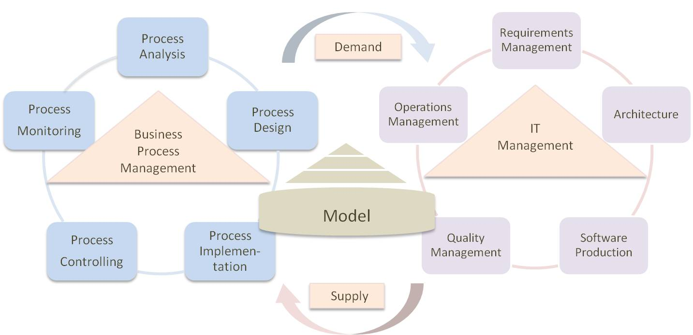

Quality is never an accident, it is always the result of high intention, sincere effort, intelligent direction and skillful execution, it represents the wise choice of many alternatives.
William A. Foster
Delivering corporate services swiftly, with a seamless user experience - serving in Internet style - is the new pinnacle for IT organisations.
IT Organisations adapting to the culture of daily change and automation will enable the enterprise to increase the business outcome.
Agile methods, collaboration, service management and lean principles are the proven basis for the mandatory shift to what we already enjoy in today's Internet.
Starting at the end without regard for current constraints and tackling the end-to-end customer experience the IT becomes a think tank enabler.
The culture of Internet DevOps delivers within days and weeks instead of months and allows adapting to the constantly changing needs and opportunities.
Transitioning the existing processes shall be fast and dynamic so that nobody will miss the legacy or even question if it could be done otherwise.
There is no substitute for knowing an industry inside out. QPARK offers services for the Luxembourgish market in the practices
The practice uses the process metaphor and standards to define a robust and functional business.
Products and Consulting
Our expertise
QPARK lead: Michael Bünte
The practice uses insights from business process management to guide the requirements engineering process for applications that fit into business and the global IT architecture. Understanding client business is key.
Products and Consulting
Our expertise
QPARK lead: Stefan Neurohr
The practice aims the agile implementation of digital processes using state-of-the-art tools.
Platforms & Tools
Our expertise
The Enterprise Integration Platform is a consulting tool that allows us to efficiently set up SOA (Service Oriented Architecture) and MDM (Master Data Management) projects. The software is build on our experience that is transformed into design patterns on top of a stable and reliable software stack including © Pivotal tcServer and © Spring Source projects.
The software is provided under the Eclipse Public License 1.0.
Please contact us for additional information.
Contract-first APIs: Manage WebServices with XML-Schema, process JSON
Code Generation: Generate Interfaces and Glue Code and focus on business logic
Configuration Models: Model your application landscape and centrally maintain the configuration
Automated Build, Test, Packaging and Deployment
QPark organizes courses in IT Standards in Luxembourg & Germany.
Courses for project members lead to a deeper understanding of the applied methodologies.
Every business is different, every company is unique. QPARK creates dedicated and targeted offerings.
QPARK is looking for future partners as Practice Leaders in the Luxembourg market for a defined vertical or horizontal field e.g. finance, institutions, IT, security.
Future partners need
QPARK offers
QPARK is looking for Consultants and Developers for our projects in Luxembourg.
Future Consultants / Developers need
QPARK offers
We are experts from IT and software development with a strong business focus developed in our professional carreer.
QPARK is a partner organization which means that our consultants play an active role and take decisions to make things work.
The QPARK approach for management bases on the deep analysis of the business process and the IT life-cycle, thus aligning both worlds.
Société á responsabilité limitée
3, Rue des Bains
L - 1212 Luxembourg
RCS: B 151390
IC: LU 23780586
TVA: 20102403283
Mobile: +352 (dot) 691 (dot) 672 (dot) 305
Mail: michael.buente(@)qpark-consulting.com
Profile: Michael Bünte LinkedIn
Mobile: +352 (dot) 691 (dot) 661 (dot) 505
Mail: stefan.neurohr(@)qpark-consulting.com
Profile: Stefan Neurohr LinkedIn